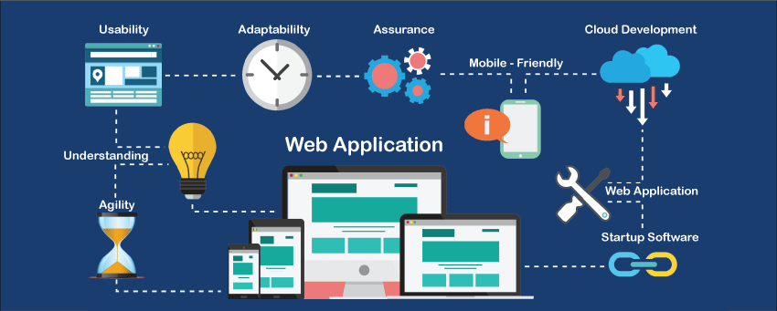

MCA S1 Web Programming Module 1
- Introduction to Web
- Client-Server Concept
- Components of Web Application
- Types of Web Content
- HTTP Overview
- Dynamic Web Pages
- Web Security
- A request line.
- A series of HTTP headers, or header fields.
- A message body, if needed.
INTRODUCTION TO WEB
The World Wide Web (WWW), commonly known as the Web, is an information system where documents and other web resources are identified by Uniform Resource Locators , which may be interlinked by hyperlinks, and are accessible over the Internet. The resources of the Web are transferred via the Hypertext Transfer Protocol (HTTP) , may be accessed by users by a software application called a web browser, and are published by a software application called a web server.Web consists of billions of clients and server connected through wires and wireless networks. The web clients make requests to web server. The web server receives the request, finds the resources and return the response to the client. When a server answers a request, it usually sends some type of content to the client. The client uses web browser to send request to the server. The server often sends response to the browser with a set of instructions written in HTML(HyperText Markup Language). All browsers know how to display HTML page to the client.

The World Wide Web is not synonymous with the Internet, which pre-dated the Web in some form by over two decades and upon the technologies of which the Web is built.English scientist Tim Berners-Lee invented the World Wide Web in 1989. He wrote the first web browser in 1990 while employed at CERN near Geneva, Switzerland.The browser was released outside CERN to other research institutions starting in January 1991, and then to the general public in August 1991. The Web began to enter everyday use in 1993–4, when websites for general use started to become available. The World Wide Web has been central to the development of the Information Age, and is the primary tool billions of people use to interact on the Internet.
Web resources may be any type of downloaded media, but web pages are hypertext documents formatted in Hypertext Markup Language (HTML). Special HTML syntax displays embedded hyperlinks with URLs which permits users to navigate to other web resources. In addition to text, web pages may contain references to images, video, audio, and software components which are either displayed or internally executed in the user's web browser to render pages or streams of multimedia content.
CLIENT-SERVER CONCEPT
client–server model is a distributed application structure that partitions tasks or workloads between the providers of a resource or service, called servers, and service requesters, called clients.[1] Often clients and servers communicate over a computer network on separate hardware, but both client and server may reside in the same system. A server host runs one or more server programs, which share their resources with clients. A client usually does not share any of its resources, but it requests content or service from a server. Clients, therefore, initiate communication sessions with servers, which await incoming requests. Examples of computer applications that use the client–server model are email, network printing, and the World Wide Web. Contents. The "client-server" characteristic describes the relationship of cooperating programs in an application. The server component provides a function or service to one or many clients, which initiate requests for such services. Servers are classified by the services they provide. For example, a web server serves web pages and a file server serves computer files. A shared resource may be any of the server computer's software and electronic components, from programs and data to processors and storage devices. The sharing of resources of a server constitutes a service. Whether a computer is a client, a server, or both, is determined by the nature of the application that requires the service functions. For example, a single computer can run web server and file server software at the same time to serve different data to clients making different kinds of requests. Client software can also communicate with server software within the same computer.[2] Communication between servers, such as to synchronize data, is sometimes called inter-server or server-to-server communication.
COMPONENTS OF WEB APPLICATION

All web-based database applications have three primary components: A web browser (or client), a web application server, and a database server. Web-based database applications rely on a database server, which provides the data for the application. The database server sometimes also provides business logic in the form of stored procedures. Stored procedures can offer significant performance advantages, especially in a multi-tiered architecture. In addition to database servers, other enterprise information system components include IMS databases, The clients handle the presentation logic, which controls the way in which users interact with the application. In some cases, the client validates user-provided input. Web applications sometimes integrate Java™ applets into the client-side logic to improve the presentation layer.
Applet A Java program that is part of a Hypertext Markup Language (HTML) page. (HTML is the standard method for presenting web data to users.) Applets work with Java-enabled browsers, such as Microsoft Internet Explorer; they are loaded when the HTML page is processed. Web application servers manage the business logic. The business logic, typically written in Java, supports multitiered applications. The web application server can manage requests from a variety of remote clients. The web application layer might include JavaServer Pages (JSP) files, Java servlets, Enterprise JavaBeans (EJB) components, or web services. JSP A technology that provides a consistent way to extend web server functionality and create dynamic web content. The web applications that you develop with JSP technology are server and platform independent. Servlet A Java program that responds to client requests and generates responses dynamically. EJB A component architecture for building distributed applications with the Java programming model. Server transactional components are reusable and provide portability across application servers. Web services Self-contained, modular applications that provide an interface between the provider and the consumer of application resources. You can read more about web services later in this information.
TYPES OF WEB CONTENT
Web content development is the process of crafting all the information your website offers. It can involve everything from research and analysis to the creative design, writing, and editing processes, through formatting, organizing, and publishing the resulting content on the site. logs are a type of websites that contain mainly web pages authored in HTML (although the blogger may be completely unaware that the web pages are composed using HTML due to the blogging tool that may be in use). Millions of people use blogs online; a blog is now the new "home page", that is, a place where a persona can reveal personal information, and/or build a concept as to who this persona is. Even though a blog may be written for other purposes, such as promoting a business, the core of a blog is the fact that it is written by a "person" and that person reveals information from her/his perspective. Blogs have become a mighty weapon used by content marketers who desire to increase their site's traffic, as well as, rank in the search engine result pages (SERPs). Modern research from Technorati shows that blogs now outrank social networks for consumer influence (Technorati's 2013 Digital Influence Report data). Search engine sites are composed mainly of HTML content, but also has a typically structured approach to revealing information. A Search Engine Results Page (SERP) displays a heading, usually the name of the search engine itself, and then a list of websites and their web addresses. The web addresses are listed by their order of relevance according to the search query. Searchers typically type in keywords or keyword phrases to find or search what they are looking for on the web. Discussion boards are sites composed of "textual" content organized by HTML or some variation that can be viewed in a web browser. The driving mechanism of a discussion board is the fact that users are registered and once registered can write posts. Often a discussion board is made up of posts asking some question to which other users may provide answers to those questions. Ecommerce sites are primarily composed of textual material and embedded with graphics displaying a picture of the item(s) for sale. However, there are extremely few sites that are composed page-by-page using some variant of HTML. Generally, webpages are formed as they are being served from a database to a customer using a web browser. However, the user sees the mainly text document arriving as a webpage to be viewed in a web browser. Ecommerce sites are usually organized by the software we identify as a "shopping cart". A wider view While there are many millions of pages that are predominantly composed of HTML, or some variation, in general we view data, applications, E-services, images (graphics), audio and video files, personal web pages, archived e-mail messages, and many more forms of file and data systems as belonging to websites and web pages. While there are many hundreds of ways to deliver information on a website, there is a common body of knowledge of search engine optimization that needs to be read as an advisory of ways that anything but the text should be delivered. Currently, search engines are text-based and are one of the common ways people using a browser locate sites of interest. When talking of SEO or Search Engine Optimization, web content is divided into basic formats considering the structure of present-day websites. They are:
Non-Template Web Content
In this case, a website provides a blank space where web content is written in the form of paragraphs and bullets. Information written in these pages embellishes the services and amenities provided by a company. Non-template content is mainly used because it has a lower quantity of info graphics involved and can be customized. This reduces page load times.Template Web Content
Template web content are those where information is written as per specific formats provided on a web page. Specific sections of web content are written within fixed spaces. This web content includes graphics and structural design.
HTTP OVERVIEW

The Hypertext Transfer Protocol (HTTP) is an application layer protocol in the Internet protocol suite model for distributed, collaborative, hypermedia information systems.HTTP is the foundation of data communication for the World Wide Web, where hypertext documents include hyperlinks to other resources that the user can easily access, for example by a mouse click or by tapping the screen in a web browser.
HTTP REQUEST-RESPONCE
An HTTP request is made by a client, to a named host, which is located on a server. The aim of the request is to access a resource on the server. To make the request, the client uses components of a URL (Uniform Resource Locator), which includes the information needed to access the resource. The components of a URL explains URLs. A correctly composed HTTP request contains the following elements:the HTTP response is made by a server to a client. The aim of the response is to provide the client with the resource it requested, or inform the client that the action it requested has been carried out; or else to inform the client that an error occurred in processing its request. An HTTP response contains: A status line. A series of HTTP headers, or header fields. A message body, which is usually needed.
Dynamic Web page
Dynamic web page shows different information at different point of time. It is possible to change a portaion of a web page without loading the entire web page. It has been made possible using Ajax technology.

Server-side dynamic web page
It is created by using server-side scripting. There are server-side scripting parameters that determine how to assemble a new web page which also include setting up of more client-side processing. Client-side dynamic web page It is processed using client side scripting such as JavaScript. And then passed in to Document Object Model (DOM).
WEB-APPLICATION
An application server is a server that hosts applications. Application server frameworks are software frameworks for building application servers. An application server framework provides both facilities to create web applications and a server environment to run them. An application server framework contains a comprehensive service layer model. It includes a set of components accessible to the software developer through a standard API defined for the platform itself. For Web applications, these components usually run in the same environment as their web server(s), and their main job is to support the construction of dynamic pages.
WEB-SECURITY

Ensuring that your website or open web application is secure is critical. Even simple bugs in your code can result in private information being leaked, and bad people are out there trying to find ways to steal data. The web security-oriented articles listed here provide information that may help you secure your site and its code from attacks and data theft.